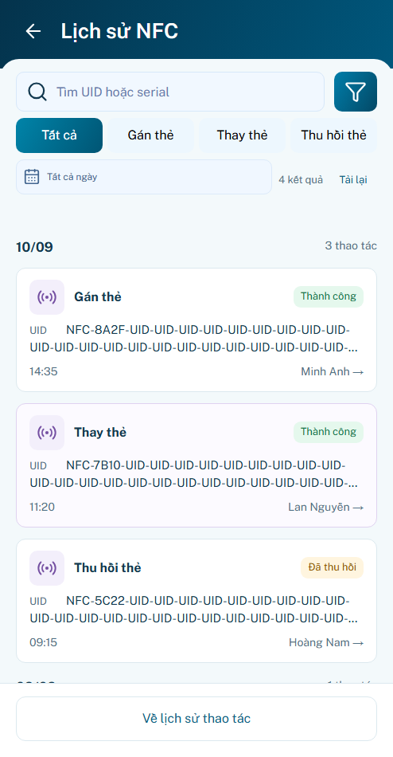
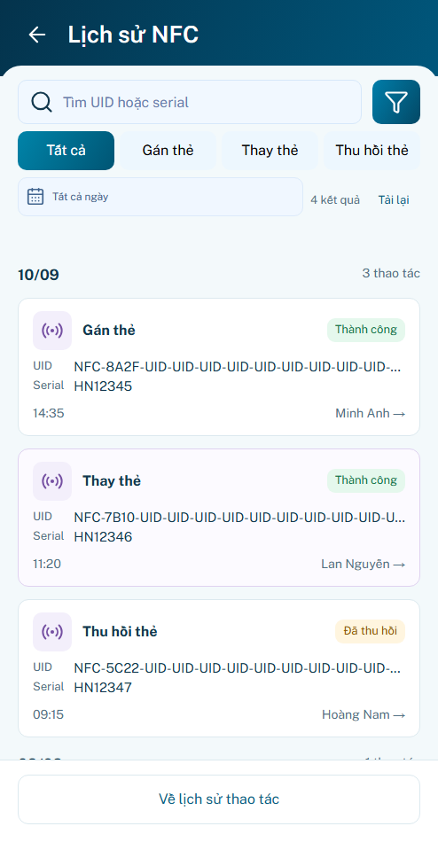
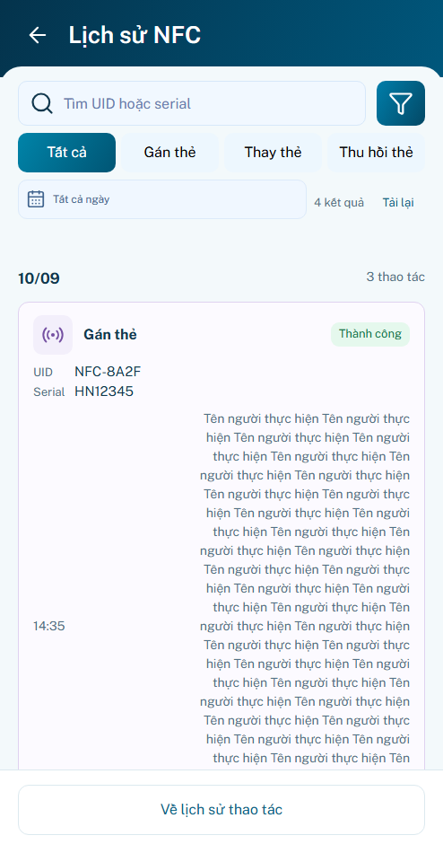
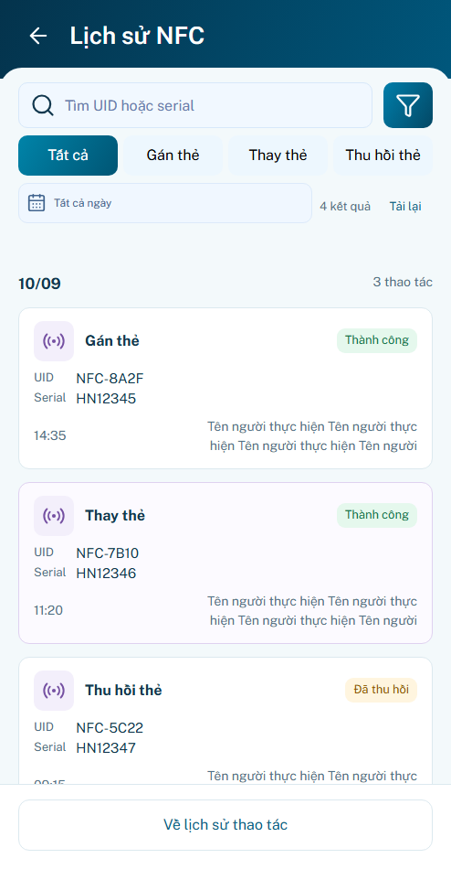
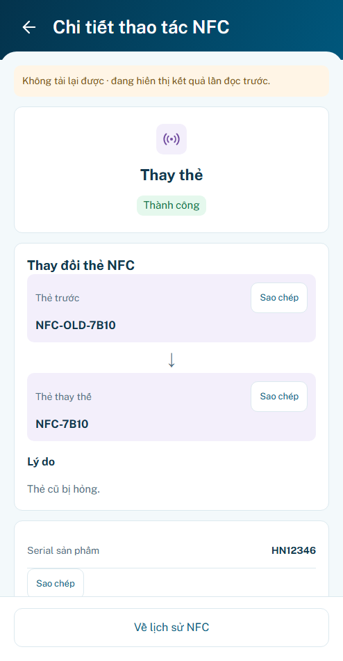
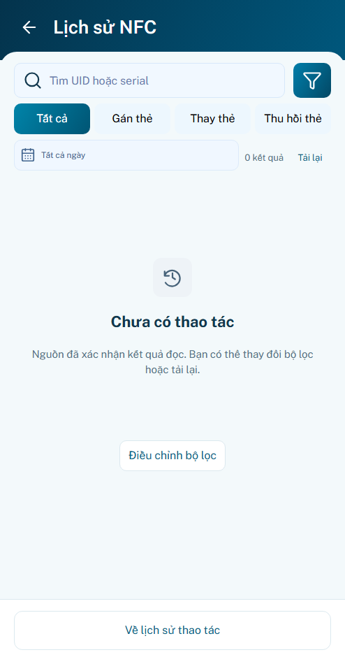
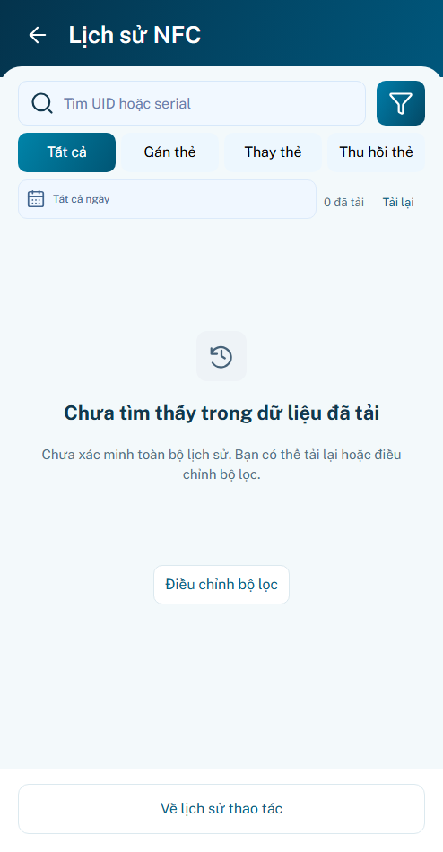

P22 r03 · Rà soát và sửa lỗi UI/UX
Đã sửa 12 ca lỗi tái hiện từ r02. Giữ sáu nâng cấp, bốn panel, khung494×950, Home/P03 footer và P21 tạm chốt. Hình thức chờ bạn review; backend và thiết bị thật chưa được xác minh.
Mở preview r03 · Báo cáo 12 ca sửa · Nguồn và phạm vi
minhanh / preview → Lịch sử → NFC. Chọn Mẫu B22/Nội dung dài trong bộ mô phỏng ngoài khung. Mặc định chưa có nguồn. Reload lấy source mới và làm mất dữ liệu preview trong bộ nhớ.
UID dài không còn che Serial
Mỗi mã có một dòng riêng. Mở thẻ để đọc/copy đủ dữ liệu; không cắt chuỗi nguồn. Cùng494×950/DPR1/fixture dài.
Trước · r02
Sau · r03
Tên dài không làm thẻ chiếm cả màn
Thẻ chỉ xem gọn hai dòng; tên nguyên văn và reader nằm ở chi tiết. Cùng fixture tên dài.
Trước
Sau
Không nhầm hủy tải với lỗi nguồn
Rời màn khi đang đọc nay ghi Tải lại chưa hoàn tất. Không chạy callback muộn hoặc tự gửi lại.
Chi tiết cũng nêu rõ dữ liệu lần đọc trước
Giữ dữ liệu đã đọc, không ngầm coi là nguồn mới đã xác minh. Nhãn này là trạng thái nguồn, không phải toast kết quả.
Trước Sau
Sau
Chưa đầy đủ khác với nguồn xác nhận rỗng
Trước
Sau
Các chuỗi thao tác được kiểm lại
- Back fallback, double Back, Forward đúng event, cuộn/focus.
- IME → đổi tab → tìm tiếp; debounce → picker → Cancel/Apply.
- Tải lại → chuyển focus/đổi màn → phản hồi muộn → retry đọc.
- Copy chậm → reader; Escape/Back; không chồng dialog.
- Bộ lọc dài, nguồn lỗi, mã dài trên năm viewport; Home/P03 footer trên bốn viewport.
Kết quả và giới hạn
90 test logic · 43 nhóm trình duyệt · 40 tổ hợp layout · 4 viewport footer. Không pageerror trong lượt đạt. Đây là kiểm prototype, không chứng minh production hoặc hình thức đã được nghiệm thu.
12 ca sau sửa · Chuỗi thao tác kết hợp · Footer khóa
Không sửa API, tồn kho, owner P07/P19–P21, baseline, dist/gallery; không push/merge/deploy. Lưu bền/thiết bị thật chưa xác minh. P23/P24 full boards chưa hoàn tất.